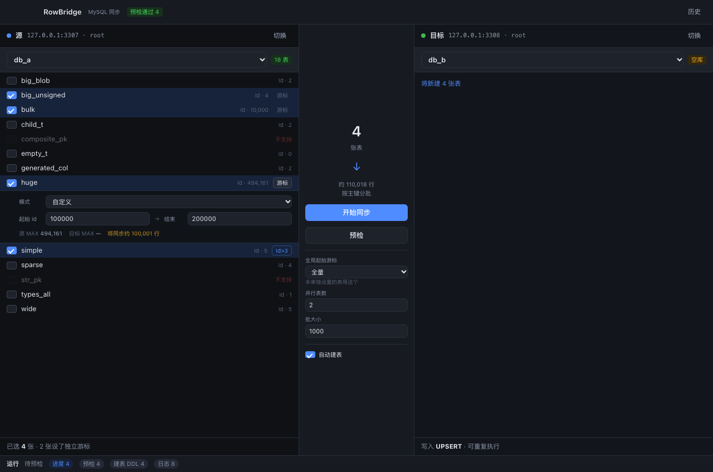
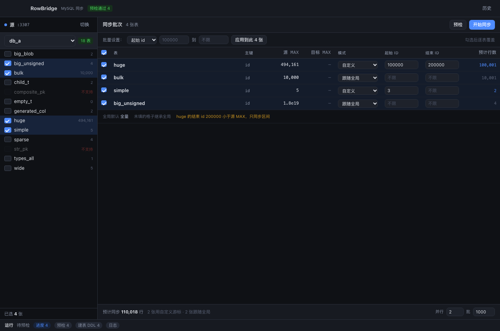
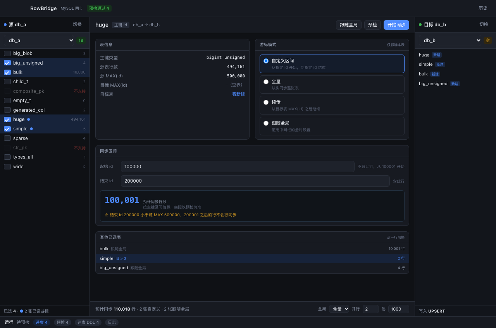

现在游标是全局的：所有勾选的表共用同一个起始/结束 id。问题在于各表主键范围不同 ——huge 的 id 到 50 万，simple 只有 1-5，填同一个自定义起点必然有一张表同步不到。下面三种改法，点开可交互查看。
huge
simple

保持现有双栏不变，勾选后每行右侧出现「游标」小按钮，点开就地展开起止输入。没设过的行显示「跟随全局」。

中间区域变成一张可编辑表格：所有已选表的源 MAX、目标 MAX、模式、起止 id、预计行数一屏看全。顶部有批量设置条，可一次给多张表套同一区间。

点表进入详情页：表信息、游标模式（自定义/全量/续传/跟随全局）、同步区间、预计行数、风险提示都在一页。下方列出其他已选表，点一行即可切换。